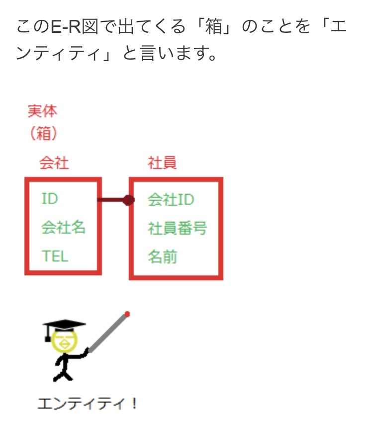
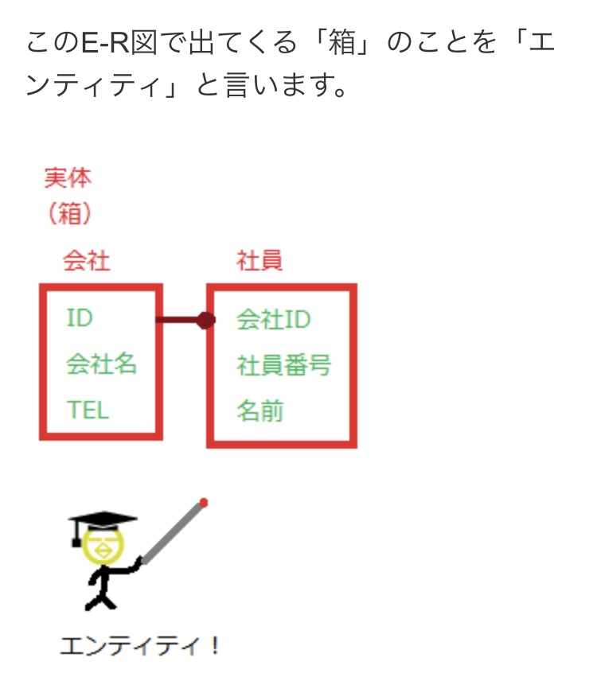

2024/06/13
ヲタク魂
アニメ好きで自称ヲタクの息子と勝負
母：Amazonプライムで適当にアニメを流す → 息子：画像はみず音声のみでタイトルを当てる
結果、息子の圧勝。
未視聴のアニメも当てことができるのは「声優」や「キャラの名前」など脳内のアニメデータ群から必要なデータを取り出していると解説
どうやら、息子の脳内には膨大なアニメデータの「エンティティ」があるらしい🤔
アニメ好きで自称ヲタクの息子と勝負
母：Amazonプライムで適当にアニメを流す → 息子：画像はみず音声のみでタイトルを当てる
結果、息子の圧勝。
未視聴のアニメも当てことができるのは「声優」や「キャラの名前」など脳内のアニメデータ群から必要なデータを取り出していると解説
どうやら、息子の脳内には膨大なアニメデータの「エンティティ」があるらしい🤔
